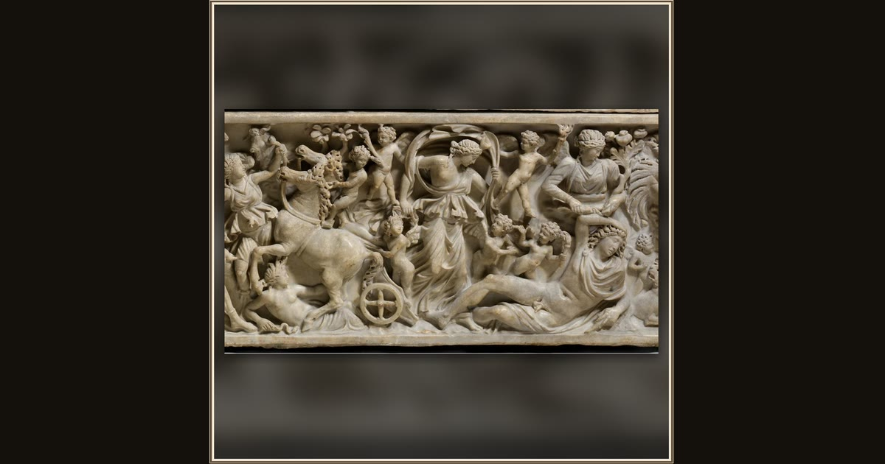

Marble sarcophagus with the myth of Selene and Endymion
Roman · early 3rd century CE · met
On this Roman sarcophagus the moon goddess Selene, cloak billowing, steps from her chariot and horses towards the sleeping Endymion, the team the hymn has her yoke and drive (8). Explore its place in Homer's The Homeric Hymns, Hymn 32 · To Selene, line 8.